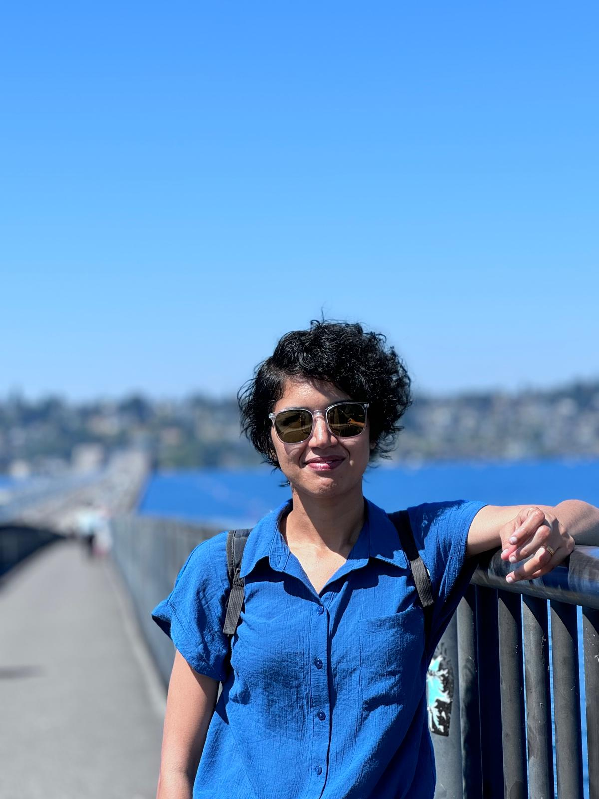

Applied Machine Learning Researcher · Speech & Language Processing · Human-Centered AI
I build AI systems that are more accessible and inclusive.
PhD (Saarland University) · Open to research scientist / engineer rolesI'm Anupama Chingacham, an early-career researcher working at the intersection of natural language processing and speech technology. I completed my PhD in Computer Science at Saarland University, advised by Prof. Dietrich Klakow and Prof. Vera Demberg, where my research focused on using paraphrases to improve speech perception in noise — building novel solutions for speech synthesizers that operate in real-world acoustic conditions.
My work centers on making language technology more human-aware — designing systems that adapt to how people actually perceive and process language, not just how they're expected to. Along the way, I received the Best Student Paper Award at INTERSPEECH 2021 for this work.
I'm currently looking for research scientist/engineer positions in industry, with a focus on NLP more broadly — from language understanding and generation to applied dialogue and speech systems. I'm especially motivated by roles where research leads to systems that make life easier or better for the people who use them.
If you're working on something in this space, or think there might be a fit, I'd love to hear from you.
Human Speech Perception in Noise: Can Large Language Models Paraphrase to Improve It?
To appear in Proceedings of the Human-Centered Large Language Modeling Workshop (HuCLLM @ ACL), 2024
A Data-Driven Investigation of Noise-Adaptive Utterance Generation with Linguistic Modification
Ninth IEEE Spoken Language Technology Workshop, 2023
Exploring the Potential of Lexical Paraphrases for Mitigating Noise-Induced Comprehension Errors
22nd INTERSPEECH Conference, 2021
Generalizing Representations of Lexical Semantic Relations
Fifth Italian Conference on Computational Linguistics, 2018